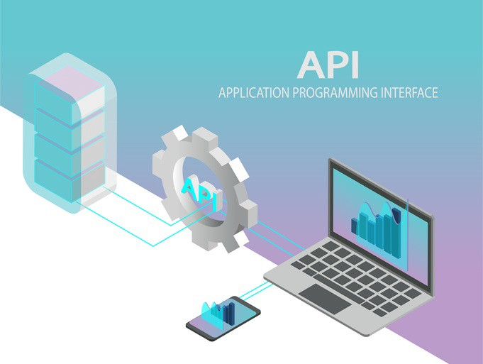

Les objets suivants sont masqués depuis 'package:stats':
filter, lag
Les objets suivants sont masqués depuis 'package:base':
intersect, setdiff, setequal, union

Introduction
Définition
On peut partir de la définition suivante
En informatique, API est l’acronyme d’Application Programming Interface, que l’on traduit en français par interface de programmation applicative ou interface de programmation d’application. L’API peut être résumée à une solution informatique qui permet à des applications de communiquer entre elles et de s’échanger mutuellement des services ou des données. Il s’agit en réalité d’un ensemble de fonctions qui facilitent, via un langage de programmation, l’accès aux services d’une application. (Source : Journal du Net)
Fonctions
Une API peut remplir des fonctions très diverses :
Dans le domaine d’internet, l’API permet aux développeurs de pouvoir utiliser un programme sans avoir à se soucier du fonctionnement complexe d’une application. Les API peuvent par exemple être utilisées pour déclencher des campagnes publicitaires d’e-mailing de façon automatique sans avoir à passer par la compréhension d’une telle application (c’est le cas avec l’API AdWords de Google, par exemple). On les retrouve aujourd’hui dans de nombreux logiciels, en particulier dans les systèmes d’exploitation, les serveurs d’applications, dans le monde du graphisme (OpenGL), dans les applications SaaS (Office 365, G Suite, Salesforce…), les bases de données, l’open data, etc.(Source : Journal du Net)
Protocoles
D’une manière générale, les API supposent un échange d’informations entre un client et un serveur.
Ces échanges d’informations suivent un protocole c’est-à-dire un ensemble de règles. Il existe deux grands protocoles de communication sur lesquels s’adossent les API : Simple Object Access Protocol (SOAP) et Representational State Transfer (REST). Le second s’est désormais largement imposé face au premier car il est plus flexible. Il a donné naissance aux API dites REST ou RESTful (Source : Journal du Net)
API et Data Science
Le métier de data analyst implique presque nécessairement l’emploi d’API. Les langages de programmation R ou Python ont donc l’un comme l’autre mis au point des packages pour faciliter l’envoi de requêtes sur des serveurs dotés d’API.
«API» est un terme général désignant le lieu où un programme informatique interagit avec un autre ou avec lui-même. Dans ce didacticiel, nous travaillerons spécifiquement avec des API Web, où deux ordinateurs différents - un client et un serveur - interagiront l’un avec l’autre pour demander et fournir des données, respectivement.
Les API offrent aux scientifiques des données un moyen raffiné de demander des données propres et organisées à partir d’un site Web. Lorsqu’un site Web comme Facebook met en place une API, il met essentiellement en place un ordinateur qui attend les demandes de données.
Une fois que cet ordinateur reçoit une demande de données, il effectuera son propre traitement des données et les enverra à l’ordinateur qui l’a demandé. De notre point de vue en tant que demandeur, nous devrons écrire du code dans R qui crée la demande et indique à l’ordinateur exécutant l’API ce dont nous avons besoin. Cet ordinateur lira ensuite notre code, traitera la requête et renverra des données bien formatées qui peuvent être facilement analysées par les bibliothèques R existantes.
Pourquoi est-ce précieux? Comparez l’approche API au scraping Web pur. Lorsqu’un programmeur gratte une page Web, il reçoit les données dans un morceau de HTML désordonné. Bien qu’il existe certainement des bibliothèques qui facilitent l’analyse du texte HTML, ce sont toutes des étapes de nettoyage qui doivent être prises avant même de mettre la main sur les données que nous voulons!
Souvent, nous pouvons immédiatement utiliser les données que nous obtenons d’une API, ce qui nous fait gagner du temps et de la frustration.
A titre d’exemple, C. Pascual propose de travailler avec l’API Open Notify, qui donne accès à des données sur divers projets de la NASA. À l’aide de l’API Open Notify, nous pouvons notamment en savoir plus sur l’emplacement de la Station spatiale internationale et sur le nombre de personnes actuellement dans l’espace.
Installer les packages jsonlite et httr
Pour travailler avec des API dans R, nous devons intégrer certaines bibliothèques (library). Ces bibliothèques prennent toutes les complexités d’une requête d’API et les enveloppent dans des fonctions que nous pouvons utiliser dans des lignes de code uniques. Les bibliothèques R que nous utiliserons sont httr et jsonlite. Elles remplissent des rôles différents dans notre introduction des API, mais les deux sont essentiels.Si vous ne disposez pas de ces bibliothèques dans votre console R ou RStudio, vous devez d’abord les télécharger.
library(httr)library(jsonlite)
Formulation d’une requête GET()
Une requête adressé à une API va suivre le schéma suivant :
knitr::include_graphics("img/API_GET.png",)
Il existe plusieurs types de requêtes que l’on peut adresser à un serveur API. Pour nos besoins, nous allons simplement demander des données, ce qui correspond à une demande GET. Les autres types de requêtes sont POST et PUT, mais nous n’avons pas à nous en préoccuper dans l’immédiat
Afin de créer une requête GET, nous devons utiliser la fonction GET() de la bibliothèque httr. La fonction GET() nécessite une URL, qui spécifie l’adresse du serveur auquel la demande doit être envoyée.
Notre programme télécharge les données disponibles à l’adresse du serveur et les stocke dans un objet auquel on peut donner le nom que l’on souhaite, par exemple ovni dans la mesure où le résultat est de prime abord assez mystérieux…
Nous savons désormais que notre objet ovni est une liste comportant 10 branches, elles-mêmes divisées en sous branches qui peuvent être elles-même des listes…
Remarque sur les listes
Les listes sont des objets complexes mais fondamentaux pour la programmation en R. On peut accèder aux branches d’une liste soit en utilisant une série de $ soit en se servant de doubles crochets [[ ]]. Par exemple, si on veut accèder à la date de la réponse on peut taper au choix :
ovni$headers$date
[1] "Fri, 17 Mar 2023 16:53:33 GMT"
ovni[["headers"]][["date"]]
[1] "Fri, 17 Mar 2023 16:53:33 GMT"
On peut également afficher les noms des branches en partant de la racine puis en suivant l’arbre à l’aide de l’instruction names()
Les données contenues dans la réponse ont été stockées au format JSON (JavaScript Object Notation) qui est devenu un standard pour les échanges de données. Mais elles ont été ensuite comprimées en format binaire pour limiter la taille du fichier transféré. Il va donc falloir procéder en quatre étapes pour les extraire
étape 1 : récupérer les données au format binaire
On extrait le champ de données dans la liste. Le résultat est assez étrange :
On commence à mieux voir le résultat mais ce n’est pas encore très lisible car il s’agit de données au format JSON
étape 3 : convertir les données JSON en objet R
On convertit les données de type JSON en données utilisables par R à l’aide de la fonction fromJson() du package jsonlite()
don_R <-fromJSON(don_car)str(don_R)
List of 3
$ message: chr "success"
$ number : int 10
$ people :'data.frame': 10 obs. of 2 variables:
..$ craft: chr [1:10] "ISS" "ISS" "ISS" "Shenzhou 15" ...
..$ name : chr [1:10] "Sergey Prokopyev" "Dmitry Petelin" "Frank Rubio" "Fei Junlong" ...
On obtient finalement une liste de trois éléments dont le dernier est un data.frame décrivant les astronautes présents dans la station spatiale internationale au moment de l’execution du programme.
étape 4 : Récupérer le tableau de résultats
tab<-don_R$peoplekable(tab,caption ="Passagers de l'ISS en temps réel")
Passagers de l’ISS en temps réel
craft
name
ISS
Sergey Prokopyev
ISS
Dmitry Petelin
ISS
Frank Rubio
Shenzhou 15
Fei Junlong
Shenzhou 15
Deng Qingming
Shenzhou 15
Zhang Lu
ISS
Stephen Bowen
ISS
Warren Hoburg
ISS
Sultan Alneyadi
ISS
Andrey Fedyaev
Ecriture d’une fonction
Une fois que l’on a bien compris la procédure d’extraction de cette API, on peut construire une fonction d’extraction pour simplifier la tâche et l’automatiser :
craft name
1 ISS Sergey Prokopyev
2 ISS Dmitry Petelin
3 ISS Frank Rubio
4 Shenzhou 15 Fei Junlong
5 Shenzhou 15 Deng Qingming
6 Shenzhou 15 Zhang Lu
7 ISS Stephen Bowen
8 ISS Warren Hoburg
9 ISS Sultan Alneyadi
10 ISS Andrey Fedyaev
On peut améliorer la fonction en lui faisant ajouter un champ qui indique la date à laquelle a été effectué le relevé :
craft name date
1 ISS Sergey Prokopyev Fri, 17 Mar 2023 16:53:34 GMT
2 ISS Dmitry Petelin Fri, 17 Mar 2023 16:53:34 GMT
3 ISS Frank Rubio Fri, 17 Mar 2023 16:53:34 GMT
4 Shenzhou 15 Fei Junlong Fri, 17 Mar 2023 16:53:34 GMT
5 Shenzhou 15 Deng Qingming Fri, 17 Mar 2023 16:53:34 GMT
6 Shenzhou 15 Zhang Lu Fri, 17 Mar 2023 16:53:34 GMT
7 ISS Stephen Bowen Fri, 17 Mar 2023 16:53:34 GMT
8 ISS Warren Hoburg Fri, 17 Mar 2023 16:53:34 GMT
9 ISS Sultan Alneyadi Fri, 17 Mar 2023 16:53:34 GMT
10 ISS Andrey Fedyaev Fri, 17 Mar 2023 16:53:34 GMT
Et si on est à l’aise avec les listes, on peut aussi exporter les résultats sous la forme d’une liste plutôt que d’un tableau, ce qui évite de répéter plusieurs fois la date d’extraction des données
En effet, l’API renvoie les résultats au moment de l’execution de la fonction GET() ce qui correspond à février 2020 pour le billet de blog. Or, les astronautes sont remplacés au plus tous les six mois ce qui explique que tous les noms soient différents un an après.
NB : Cet exemple permet de mettre en évidence une fonction centrale des API qui est la mise à jour en temps réel des données !